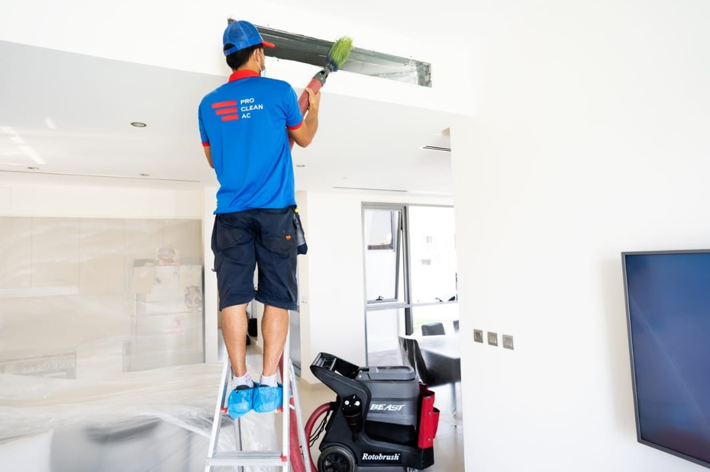
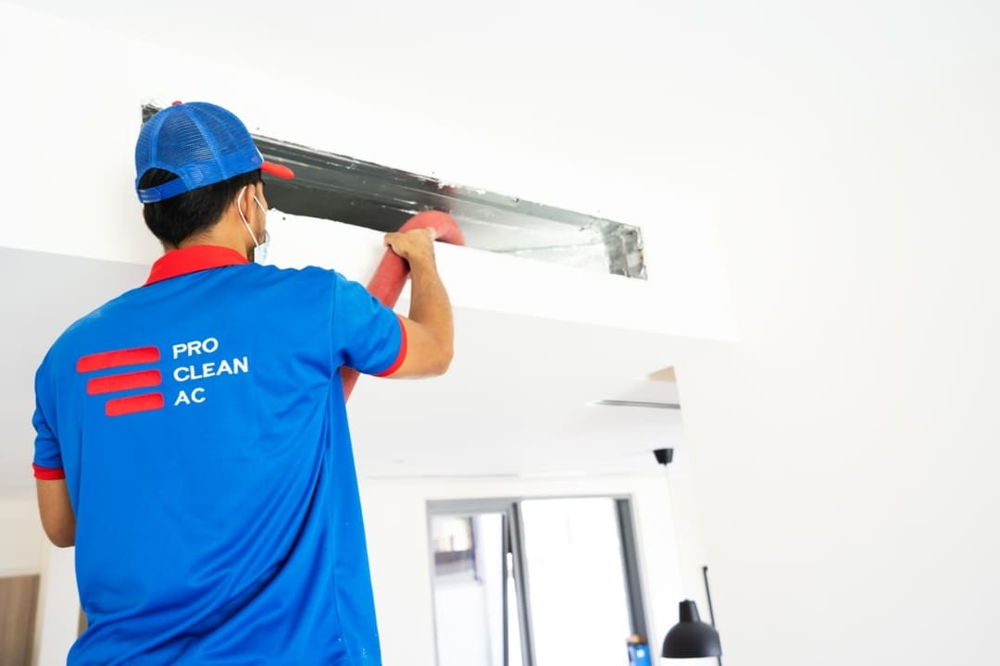

Air duct cleaning is the process of removing dust, dirt, mould, and anything that shouldn't be in your air conditioning duct systems to improve the air quality in your home.
At the heart of home health lies AC unit cleaning and air duct cleaning. Eliminating dust, dirt, mould, and microbial growth from your ductwork and coils can dramatically improve indoor air quality. Clean air ducts also help to maintain a cleaner home and increase your HVAC efficiency.
After all, clean ducts and vents mean less dust and dirt in your home and air because your ductwork serves as the pathway for all of the air moving throughout your home.

Dust and debris restrict the flow of air to and from the components of your HVAC system. When the ducts are blocked, your AC unit has to consume more energy to do its job. Keeping ducts clean will ensure your ducts can supply your living spaces with cool, fresh air.
